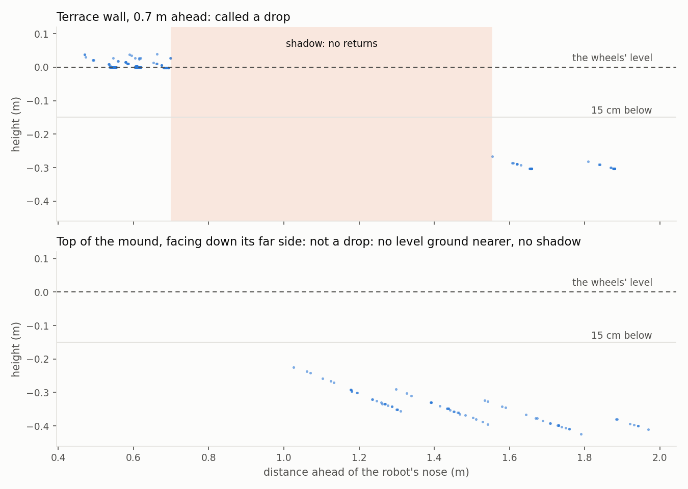

The edge of the terrace
A mower can hurt itself, or someone near it, without hitting anything. The worst way is driving off an edge: a retaining wall, a step, a pond bank. A fall can't be undone. This post gives the robot two separate ways to stay on top: the map, and its own eyes.
A terrace to fall off
The simulated yard got a new feature: a 30 cm raised terrace, 3.5 by 3 m, with walls on three sides and a 2.5 m ramp up the fourth. The lawn on top is a mowing zone like any other.
The map layer is the simple part. An edge can be marked as a drop. The robot keeps an extra 15 cm back from it, on top of its usual margin, and routes between lawns never run along it. On the correct map the robot mowed 98% of the terrace it could reach, with no false stops. The closest its body came to an edge was 19 cm.
The sensing layer is for when the map is wrong. The robot gets a map with the terrace drawn 0.5 m bigger than it really is, so the planned route runs straight off the walls. It has to notice the edge itself.
What an edge looks like to a lidar
The 3D lidar looks forward and down. "Ground much lower than the wheels" sounds like the obvious test for an edge, and it was wrong. The bumpy test lawn has a 25 cm mound. From the top of it the far side is 15 to 29 cm below the wheels, just like a wall seen from the top. Replaying an old run along its route, 23 positions would have stopped for a cliff that was really a gentle hump.
What a wall has and a slope doesn't is a shadow. The lidar can't see a wall's face, so between the top and the lower ground there's a band where no laser beam lands. The robot now calls something a drop only when it sees level ground, then that gap, then ground at least 15 cm lower:

A crest casts a shadow too, but only when seen from far off, where the beam just grazes it. Up close the beams come down more steeply and the far side of a crest shows up, while a wall's face never does. So the shadow has to start within 0.9 m of the robot's nose. With those two rules, the replays found no false drops on the mound or the terrace. A real wall is spotted when the nose is 0.76 to 0.94 m from it.
Tuning this in the simulator would have meant a 5-minute run per guess. Instead there's now a small offline copy of the lidar: it casts the same 16 beams over the same terrain and matches the simulator's ground estimate to within 0.2 mm. A whole route replays in seconds.
The test
With the map 0.5 m too big, the robot drove up the ramp and turned onto the terrace toward the east wall, at an angle. As it turned, it saw the drop and stopped. It backed straight away from the edge by 30 cm, then gave up the mission with the reason "drop where the map says lawn". Its body never went over the real edge, but the margin was thin: its front corner stopped 12 cm from the edge. Head-on, an edge is seen with the nose 0.76 m away. A turn that swings the robot toward an edge brings it into view much closer. Giving up is deliberate: if the map is that wrong, a person should look before the robot mows there again.
What broke on the way
Most of the work was in the parts that were already there, made to cope with ground at two heights.
- The ground estimate followed the lower yard. Crossing the ramp toward its open side, most of the ground the lidar saw was the yard below. The fitted ground sank to match it, so the grass on the ramp read as a 10 cm obstacle. Now the robot tries a second fit that leaves out the ground below its own wheels, and keeps whichever fits the ground just ahead better.
- Next to a step down, grass grew. Each patch of ground is measured against its neighbours, so a box's top isn't mistaken for the floor. Beside a step, the lower neighbour made the upper side's grass read 10 cm tall, and the robot stopped while turning on the ramp. An object's floor is visible in front of it and on both sides of it, so that is now the rule.
- One fix too far. A cap on that height worked for obstacles. Applied to grass too, it made the grass just over the ramp's crest read as bare paving, and the blade kept stopping for paving that didn't exist (87% mowed). The cap now applies to obstacles only.
- The wrong map was wrong in the wrong place. Drawn 0.5 m bigger all round, it also took in the low yard beside the ramp. The route started down there and ran into the ramp's side, a real 10 cm step. The robot stopped for it, correctly. Now only the three walls you could fall off are drawn too far out.
- A ghost simulator. Several earlier test runs wouldn't start. A simulator from an old run had kept running in the background for two hours. With it gone, every run started.
The obstacle course still passes after all this: on bare ground every obstacle is seen; in 7 cm grass, everything but the garden hose, which was never seen in grass.
Not covered yet
Two cases the lidar can't settle on its own. A turn that ends facing an edge already close to the nose: the first ground in view is low, with no level ground nearer to compare with, which is exactly how the mound's far side looks. And an edge running alongside the robot: looking sideways past it, the lidar again sees only low ground. The 12 cm in the test was the first case, caught in time but not by much. For now the map's margin is the answer to both. Two cheap downward distance sensors at the front corners, a hardware option still to decide, would cover them without the lidar.
Also found: coming down the mound in long grass, the levelling-out lawn ahead tricked the ground estimate, and the robot stopped for grass. That was already true before this work (it's slightly better now), and it's the first job for the next step: slopes.